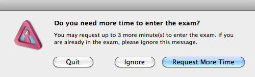
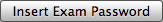

Navigating to the exam you've selected is dependent on your LMS (Learning Management System) or CMS (Course Management System). If you are unsure of how to use your organization's system, contact your teacher.
There is a time limit to navigate to the selected exam. A timer in the upper right corner of the window will show how much time you have available. If this timer runs out, you will be prompted with the following alert:

The user has several options:
Upon navigating to the password page of the selected exam, the  button in the window toolbar becomes available. Selecting it will populate the exam password field. Submitting this password will allow you to enter the exam.
If you accidentally navigate to an exam that you did not initially select, you may still navigate to the correct exam and insert the password for that exam.
If the exam password does not allow entry to the exam and you've confirmed that the password page is for the initially selected exam, please contact your teacher for further instructions.